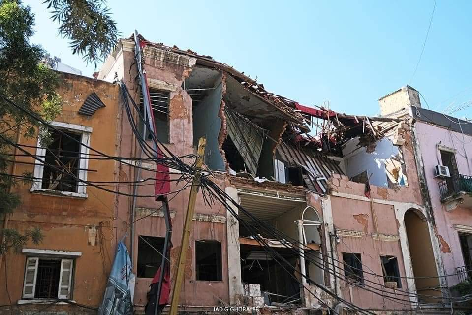
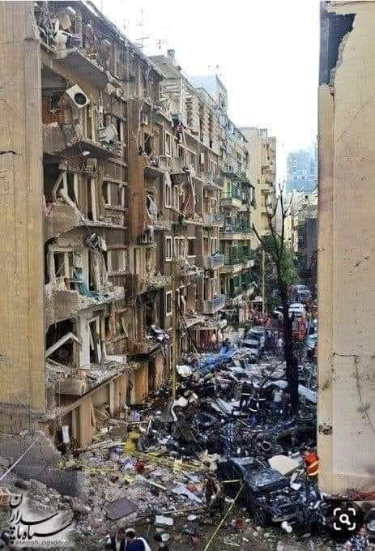
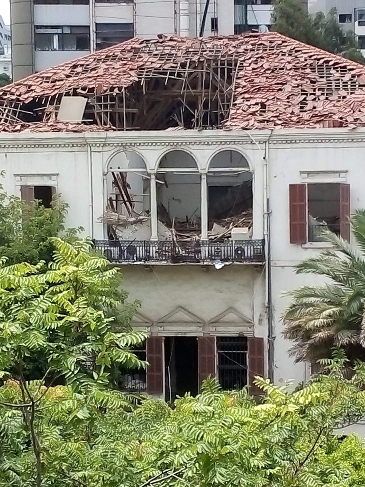
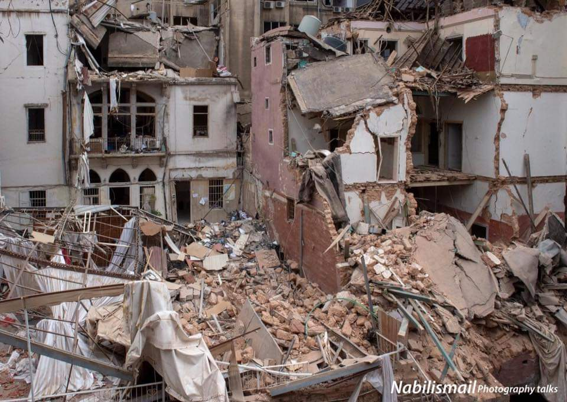
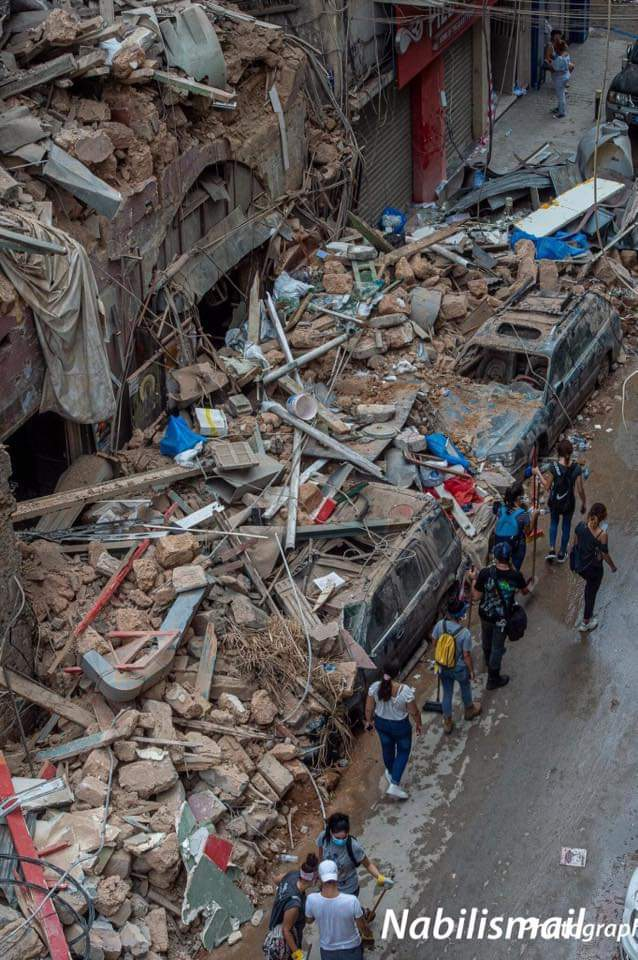
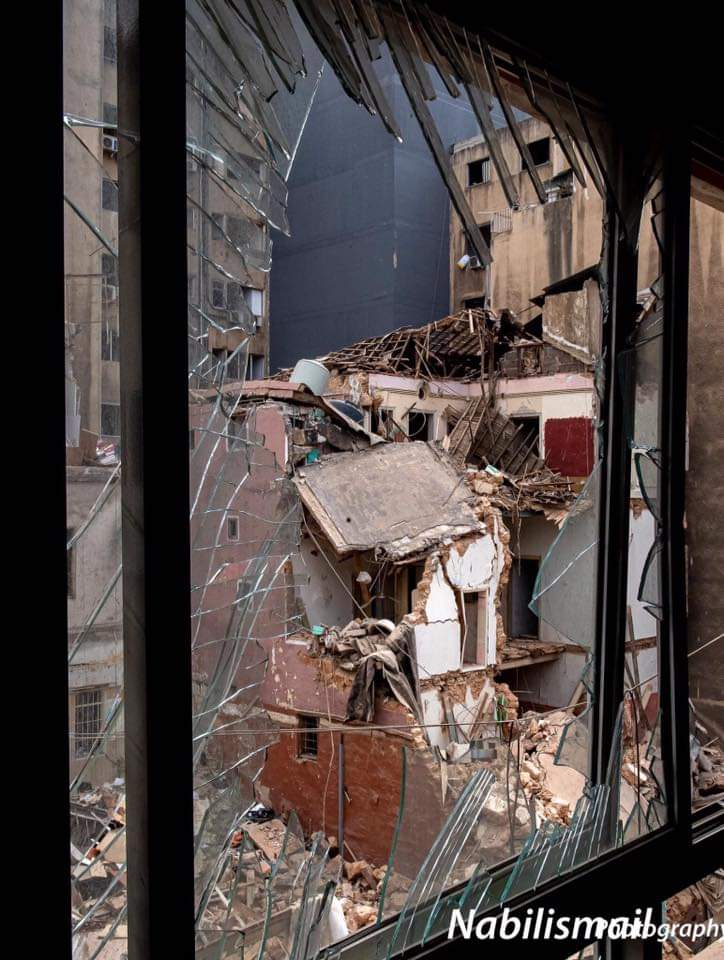

Lebanon has endured civil war, occupation, assassination and political paralysis. When a blast tore through the city, many residents instinctively assumed it was an attack. The emerging explanation was in some ways more disturbing: the danger had been sitting in plain sight.
By Maya ChelleBeirut port explosion · July 8, 2021
Smoke rises from the Port of Beirut before the main explosion. The blast wave reaches the camera.
BEIRUT, Lebanon — On summer weekends, residents leave Beirut for the beaches north of the city or climb into the mountains, where the air cools and restaurants look down toward the Mediterranean.
At night, traffic builds outside the bars and clubs of Gemmayzeh and Mar Mikhael. Music carries from rooftops. Parties fill hotel terraces and village squares.
The city is vibrant in natural resources, culture, and nightlife.
These scenes endure through wars, assassinations, blackouts, and political crises. They form the spirit of the Lebanese people: social, spirited, and determined to continue their lives, even amidst chaos. Videos have emerged of wedding parties dancing into the night as missiles light the skies in a dangerous display.
Lebanon stands apart from the region in religious tolerance: Maronite Christians, Sunni Muslims, Shiite Muslims, and Druze share the city.
The government forms a different aspect of the country's identity.
Civil war broke out in 1975 and lasted 15 years. Syrian troops entered in 1976 and remained until 2005. Israel invaded in 1978 and again in 1982, then occupied part of southern Lebanon until 2000.
Lebanon has always played a role as the region's battleground. Iran backs Hezbollah. Saudi Arabia supports Sunni political figures. Syria continues to exert influence. Israel fights a war against Hezbollah.
It can make your head spin.
The spirit of the people has endured, frequently driving out invading militaries and unsuitable regimes through mass protests.
Still, political order has never recovered. Militias become parties. Former commanders enter Parliament. Syrian intelligence shapes government decisions. Assassinations and car bombs plague their history.
Instability and chaos rule.
The government has repeatedly stopped functioning. Rival blocs left the presidency vacant from 2014 to 2016. Another presidential vacuum began in 2022 and lasted until 2025.
For many, this kind of governmental shutdown is inconceivable.
All of this political instability has, of course, greatly affected citizens' daily lives. Throughout history, particularly during military invasions, electricity failures have been commonplace. A garbage crisis has left refuse piled in the streets for weeks. Public debt rises, and infrastructure deteriorates. Bombs and war have often left entire blocks in shambles.
Lebanon rebuilds. Homes, restaurants, shopping districts. Life goes on.
The response can look carefree. It comes with constant vigilance. Residents notice aircraft overhead. They listen to distant impacts. They know how quickly a celebration can become an evacuation.
In October 2019, protesters gathered across the country. The political chaos has become unbearable, and they demand a change in leadership. They demand order and transparency. They blame the entire political class for corruption and economic decline. Banks soon restrict withdrawals, the currency collapses, and families lose access to savings. Millions of Lebanese Pounds and US Dollars locked in people's accounts, inaccessible.
Then Covid-19 arrives.
Despite the political pandemonium, the health sector must fight the pandemic. Importing medicine and retaining staff become nearly impossible. The pandemic strained resources and morale across the globe. In Lebanon, it could not have come at a worse time.
On Aug. 4, 2020, an explosion shatters the city. Its magnitude shakes the ground up to 150 miles (250km) away.
It starts as a fire. From a distance, a small orange blur with a rising trail of smoke.
The cloud of smoke grows above the grain silos in or near Hangar 12, a warehouse beside the water. Small explosions crack inside the building.
People step onto balconies and rooftops to record it.
One video begins with a gray plume over the port. The camera remains steady as the smoke thickens. Before spectators can process what has just occurred, an orange flash appears at the base of the cloud.
A thick white pressure cloud expands across the waterfront. It reaches the camera within seconds. The sonar shockwave follows. The camera falls, and the video ends.
A second view records the rising plume beyond Beirut’s rooftops.
The explosion occurs at about 6:08 p.m.
Its pressure wave moves through Beirut, tearing doors from their frames and turning windows into flying blades. It cuts through homes, offices, schools and hospitals. The sound crosses the Mediterranean and reaches Cyprus, about 150 miles away.
Later counts place the death toll at no fewer than 236. More than 7,000 people suffer injuries. The blast forces an estimated 300,000 residents from their homes and damages tens of thousands of apartments.
The scale suggests war. How else to explain such a catastrophic explosion? Such senseless pain and suffering?
Before those facts emerge, residents search for an explanation.
First-person accounts from residents on the ground span across various explanations. Many assure that an aircraft flew above the port. Confidently, they affirm that they saw something fly overhead. Many even describe a faint whistle, the kind a falling bomb might make. Messages accuse Israel of striking a Hezbollah weapons store or Syria of sabotaging Lebanon while its government remains weak.
The speed at which these serious accusations appear is frightening. Yet indicative of the consequences for a people plagued by conflict.
Other residents suspect arson. They point to the initial fire and ask who started it. Some claim the sparks within the initial have been minor explosives set off throughout the hangar.
Lebanon’s civil aviation authorities later report that local radar detects no military aircraft during the relevant period. Investigators find no reliable evidence of an airstrike, nor of arson.
The emerging explanation points to negligence.
Inside Hangar 12, officials have stored ammonium nitrate for nearly six years. Farmers commonly use the chemical as fertilizer, but heat, contamination and confinement can make a large stockpile explode.
Customs officers, port administrators, judges, security agencies and ministries had exchanged letters about it. Some ask to sell the cargo. Others propose re-exporting it or handing it to the army.
No agency removes it.
This form of inaction has been a decades-long trend.
In 2015, a similar situation took place. The Netherlands, Great Britain, Germany, and Sierra Leone all respectively offered to take charge of Lebanon's great garbage crisis. A country drowning in waste, and fortunate to have foreign leaders take charge to alleviate the strain. There was much deliberation.
A formal deal never took place.
This time, of course, inaction came at a much higher cost.
A state security report had reached President Michel Aoun and Prime Minister Hassan Diab in July 2020. It described the ammonium nitrate as dangerous and highly flammable. It was highlighted as an urgent matter.
Less than three weeks later, Beirut explodes.
The disaster carries a bitter irony for a country accustomed to foreign attack. No army needs to cross the border. No pilot needs to drop a bomb. Years of administrative delay are all it took. A betrayal from the inside.
The cause of the initial fire remains unresolved. Investigators consider sparks from repair work and a fire that spreads from another part of the port. The evidence establishes that flames reach the ammonium nitrate, but it does not establish who or what produces the first spark.
The pressure wave strikes a moving car as a passenger records the port.Footage circulated online and attributed to an unidentified student in a dormitory.
Firefighters reach the port while the warehouse burns. No one warns them about the ammonium nitrate. Several stand near Hangar 12 when the main explosion occurs.
Across Beirut, hospitals receive the pressure wave before they receive the casualties.
Covid-19 already fills intensive-care beds. On the day before the blast, the head of Lebanon’s principal public hospital for coronavirus patients warns that it approaches capacity.
The explosion disables three hospitals and heavily damages three others, according to the World Health Organization. Beirut loses the equivalent of about 500 hospital beds just as thousands of injured residents seek treatment.
Saint George Hospital University Medical Center stands close to the port. Glass and debris tear through its rooms. Staff members evacuate patients and treat people outside.
Coronavirus precautions collapse. Bleeding residents crowd entrances and sidewalks. Doctors treat strangers without time for screening. Families move from hospital to hospital searching for missing relatives.
A photograph in the archive shows Pamela Zeinoun, a nurse in the neonatal intensive-care unit at Saint George, holding three premature babies against her chest. The blast knocks her unconscious. When she recovers, she removes the infants from damaged incubators and carries them out. Photojournalist Bilal Jawich photographs her holding the babies while trying to use a telephone.
Four nurses at Saint George die.
The explosion also tears through Beirut’s cultural center. The Sursock Museum and the Sursock Palace across from it suffer extensive damage. Windows shatter, tiled roofs break and historic interiors open to the weather. The destruction spreads through Gemmayzeh, Mar Mikhael and Ashrafieh. UNESCO later reports damage to at least 8,000 buildings, including 640 historic structures. Inspectors consider about 60 at risk of collapse.

A damaged historic residence in Beirut.

Debris fills a residential street after the blast.

The pressure wave damages roofs, windows and balconies across the city’s historic districts.

Rooms stand open to the street after exterior walls collapse.

Residents and volunteers move through the wreckage.

A view from inside one damaged structure toward another.
The archive includes a memorial for Joe Akiki, a 23-year-old electrical-engineering student who works as an electrician at the port to pay his tuition. Hours before the explosion, Mr. Akiki calls his mother and tells her he has taken an overnight shift. He sends friends a video of the port fire. Search teams recover his body several days later. The memorial claims that he calls from under the rubble and that authorities block foreign rescuers from reaching him. Reliable reporting does not confirm those claims.
In the days after the blast, the city mobilizes. The indomitable spirit of the Lebanese people shines through. Volunteers sweep glass and remove debris. Restaurants turn their kitchens into relief centers. Residents offer rooms, medicine and transportation.
Anger grows alongside the relief effort.
French President Emmanuel Macron walks through damaged Beirut streets two days after the explosion. Residents surround him, denounce Lebanon’s leaders and ask France to intervene.
An online petition calls for Lebanon to return to a French mandate for 10 years. More than 60,000 people sign it. Some appeals end with “Vive la France.”
The petition proposes reversing the independence process that Lebanese leaders began in 1943 and France advances through the transfer of administrative powers in January 1944.
Many Lebanese sign because they no longer believe their own government can protect them or manage the country.
Though petition carries no legal force, it shows how far public confidence has fallen.
Lebanon’s government resigns six days after the blast.
The investigation soon runs into political resistance. Officials refuse questioning, invoke immunity and challenge the judges who summon them.
Accountability is sparse.
Judge Tarek Bitar resumes the inquiry in 2025 after another two-year interruption. The country still awaits a final account of responsibility.
Families of the dead return to the port with photographs of their relatives. Behind them, the damaged grain silos still tower above the Mediterranean.
Through its wars and political crises, the Lebanese people continue to wonder: will anyone with power answer for what happens to those without it?